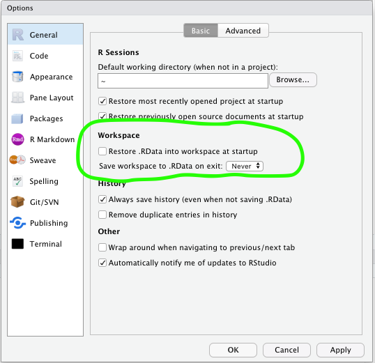

Chapter 3 Module 1 - introduction to R
In it’s simplest form R can be used as a calculator with +, -, / or *.
## [1] 104Or
## [1] 22Create objects with <-, which is called the assign operator.
## [1] 104The assign operater <- can be reversed ->
## [1] 104You can combine values, or objects in a new object with the function c() (c for combine).
When objects are combined they are called a vector.
## [1] 4 104 20Objects and vectors are not restrained to numerical values, you can use text in them as well.
## [1] "hej" "jag" "älskar" "r"However, you cannot mix numerical and text values.
## [1] "1" "5" "hej" "6"3.1 Missing values
NA is not zero. It is not a value.
If check which values that are larger than two:
## [1] TRUE NA FALSE TRUELet’s filter out all the NA’s:
## [1] NA NA NA NAConfusing?
## [1] NAIf we want to find an NA or filter out NAs we us is.na() instead.
## [1] FALSE TRUE FALSE FALSEna.rm is a common argument in functions.
## [1] NAWe use na.rm = TRUE
## [1] 18.666673.2 R is a functional programming languange
- Functions reside in packages
- Functional programming is great for Data Science
3.3 Functions
Just like in Excel
- mean()
- median()
- sd()
- …and so on
And mathematical
- log()
- sin()
- cos()
- …osv
3.4 Documentation
To access documentation about functions, i.e. how they work, you just add a question mark in front of the function that you are interested in.
3.5 Excercices
- Use some of R’s statistical functions on a numerical vector
3.6 data.frame
data.frames are a common format when doing data science in R. A data.frame is a rectangular table with one or more columns.
## # A tibble: 6 x 19
## year month day dep_time sched_dep_time dep_delay arr_time
## <int> <int> <int> <int> <int> <dbl> <int>
## 1 2013 1 1 517 515 2 830
## 2 2013 1 1 533 529 4 850
## 3 2013 1 1 542 540 2 923
## 4 2013 1 1 544 545 -1 1004
## 5 2013 1 1 554 600 -6 812
## 6 2013 1 1 554 558 -4 740
## # … with 12 more variables: sched_arr_time <int>, arr_delay <dbl>,
## # carrier <chr>, flight <int>, tailnum <chr>, origin <chr>, dest <chr>,
## # air_time <dbl>, distance <dbl>, hour <dbl>, minute <dbl>,
## # time_hour <dttm>We can create our own data frames in R.
## random_number
## 1 0.01997568
## 2 1.16757728
## 3 -0.83829748
## 4 -0.10742416
## 5 -0.52644831If you have two vectors of the same lenght you can combine them to a data.frame.
## siffror ord
## 1 5 vad
## 2 1 var
## 3 2 det
## 4 5 där3.7 Packages
To install a package from
CRANyou use the functioninstall.packages("package").After downloading a package your need to load it with
library(package).
3.8 Excercise
The package tidyverse is downloaded for you. Load it with library().
3.9 tidyverse and friends
tidyverse is a collection of packages for common tasks in data analysis.
They share a common philosophy
Easy to use
We will focus on tidyverse
3.9.1 Workflow in R
- Use projects
- Never save your workspace

3.9.2 Writing code in R
- Follow the
tidyverse styleguide
Name objects, functions and data.frames with small letters and *_* between words.
In contrast to:
- You are writing text for someone to read it
- Use space between
,
GOOD:
BAD:
3.10 When saving files
When saving files we try to follow this principle, so when you name a file name it min_r_fil.R instead of min R fil.R.
3.11 Avoid long expressions
This is harder to read:
Than this:
iris %>%
group_by(Species) %>%
summarise(
Sepal.Length = mean(Sepal.Length),
Sepal.Width = mean(Sepal.Width),
Species = n_distinct(Species)
) 3.11.1 Rmarkdown
- A notebook format in R
- Great for creating reports
Great for exploratory analysis
Open up
intro-to-r.Rmd